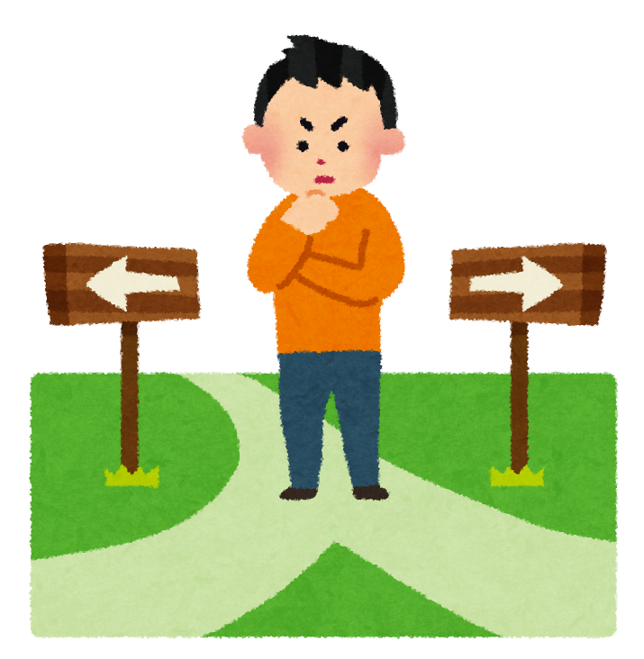

しつこいって何
目次
しつこいとは？

しつこいとは何、そしてなぜ起きるのか、ふと疑問に思ったのでまぁメモ書き程度ですが、ブログにしました。 しつこい、それは嫌と感じるほどに、付きまとうあるいは物事を聞くまたは言うこと、なんだか嫌がらせに似ているが、少し違ってくる。
引用goo辞書↓
１ 色・味・においなどが濃厚すぎて、後に残る感じである。くどい。「脂が多くて―・い味」 ２ 物事にこだわって煩わしい感じである。また、つきまとってうるさい。執念深い。「―・く追いまわす」「―・い男」
引用しました。
しつこさを知るために
私は、しつこさとは何かを知るためにいろいろな人に聞きましたしそれをシミュレーションもしました、ですがなんだかしっくりきませんでした。 でもこんなことをしているうちに、理由を聞くこと自体にしつこさを生んでいる気がしました。なのでこの方法は断念。 ですが、上記のことをやっているうちに気が付いたのが、人によって個人差があり、価値観などで変動することがわかりました。
結果

最終的にしつこさを起こさないようにするために、以下のことをやることでしつこさを調整できます。 ※完全になくすことは、人間の性質上不可能です。まず、空気を読み周りの人はどれくらいかかわると良くないのかを知ることができます。 それで距離感をつかみ、人の良い関係を作ることができます。ですがSNSなどのメッセージや音声などで距離感を掴むのは、非常に難しく、時間がかかります。 なので、（※1）ネットリテラシーや、人との関係を守りたいのであれば、極限で考えずに少し暖かい目で見るべきだと私は思います。 （※2）もちろんそれが自分から見て完全に限度を過ぎ、不快に感じたら順番に、１スルー、２相手に侮辱をせずに素直に嫌であることを伝える、３ミュート、４ブロック、これでだめだったら最終手段で５法的手段などを取るべきだと思います。 最後に、しつこさで皆が嫌な思いをしないために守ること、ネット環境を守りながら、嫌な思いをせずにかかわりたいと思うのであれば（※1）、（※2）を守るべきではないかと私は思いました。 皆さんにエンジョイライフを！！